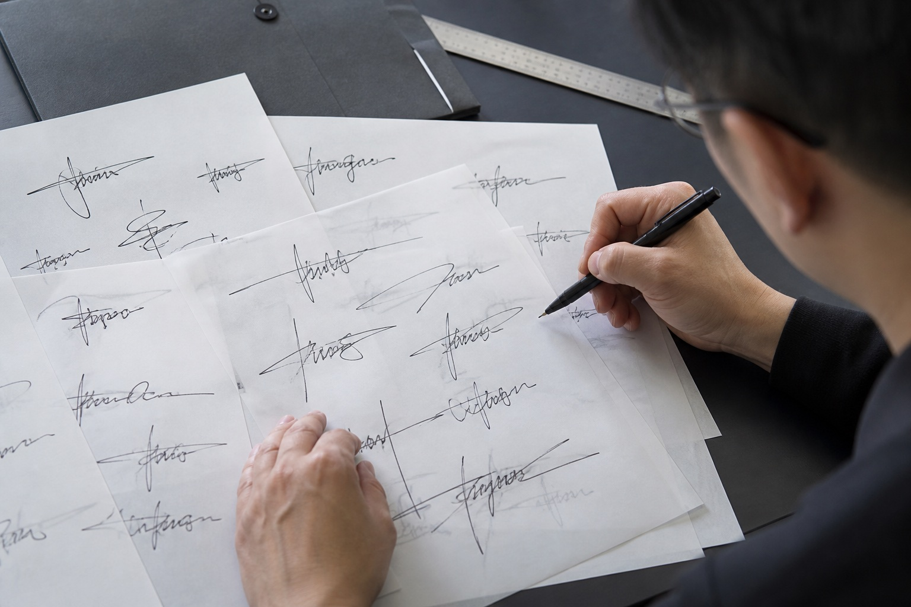

武汉模仿笔迹服务说明
武汉分站主要提供模仿笔迹、模仿签名、笔迹鉴定、手写文件和个人手写字体相关服务信息，可根据具体内容、参考样本和时间要求进行前期评估。
影响价格的常见因素
- 需要处理的字数、签名数量和页面规格
- 参考样本的清晰度、数量及笔迹复杂程度
- 普通周期、加急时间与最终交付形式
服务前建议准备
提前整理参考样本、文字内容、使用场景和时间要求，有助于更快确认是否需要补充材料以及具体服务方案。
武汉站重点说明多页手写文件的工作量。十页表格和十页连续正文并不是一回事，页面密度、批注数量、签字位置和版式要求都要分别说明。
说明服务类型、内容数量、使用场景和期望时间。
提交清晰、自然且具有代表性的手写或签字样本。
结合样本质量、内容难度和周期确认服务方案。
确认内容后进入制作，并按约定形式完成交付。
武汉分站主要提供模仿笔迹、模仿签名、笔迹鉴定、手写文件和个人手写字体相关服务信息，可根据具体内容、参考样本和时间要求进行前期评估。
提前整理参考样本、文字内容、使用场景和时间要求，有助于更快确认是否需要补充材料以及具体服务方案。
武汉站本期指南围绕多页手写文件展开。评估工作量时不仅看总页数，还要确认每页字数、行距、版式、重复内容以及参考笔迹的复杂程度。
表格、批注、正文和签字页的处理方式不同，应分别统计。内容尚未最终确定时，可以先提供具有代表性的一页用于初步判断，再补充完整文件。
建立页码和版本号可以避免后续修改时出现遗漏，也方便确认最终交付范围。
同样是十页内容，表格填写、连续正文和带有大量批注的文件工作量可能完全不同。评估前应统计每页大致字数和特殊版式。
表格需要关注单元格位置、字号和对齐方式；连续正文则更关注行距、字距和整体排布。两者混合时，应在文件清单中标出对应页码。
目标文字修改后使用新的版本号，并列出变化位置。不要在旧文件上反复覆盖，否则容易出现遗漏或最终交付内容不一致。
核对总页数、页面顺序、最终文字、版式要求和交付格式。抽查每种页面类型，确认后再进行完整文件的最终整理。
说明自然手写样本、目标文字、页面版式与完成时间怎样准备。先统计正文、表格、批注和签字页各有多少，再选一页代表性内容。目标文字每次修改都增加版本号，最终按页码核对顺序。
说明自然签字样本、签名版本、整体结构和提交方式。进入对应页面可查看具体的样本准备和文件整理方法。
说明自然签字样本、签名版本、整体结构和提交方式。进入对应页面可查看具体的样本准备和文件整理方法。
说明待分析文件、自然对比样本、形成时间和图片清晰度要求。进入对应页面可查看具体的样本准备和文件整理方法。

武汉站模仿签字新增主要版本确认项，围绕武汉模仿笔迹、模仿签名、模仿签字和笔迹鉴定更新服务资料。
武汉模仿签字多个版本怎么选？正式签名与快速签写比较，围绕武汉模仿笔迹、模仿签名、模仿签字和笔迹鉴定介绍资料准备方法。
围绕模仿笔迹、模仿签名、模仿签字和笔迹鉴定整理实用资料。
介绍服务内容、样本要求、价格因素和办理流程。

介绍签名服务范围、签字样本要求、费用与周期。
介绍笔迹鉴定范围、对比材料、费用周期和常见问题。
介绍手写文件、个人字体、字符数量和交付方式。
主要包括模仿笔迹、模仿签名、笔迹鉴定、手写文件和个人手写字体等内容。
需要结合内容数量、笔迹难度、样本质量、完成周期和交付要求综合评估。
建议准备多份清晰、自然且来源明确的样本，具体数量需要根据服务类型判断。
可以先用于沟通，请保持画面端正、光线均匀并保留未经压缩的原图。
可以，武汉各区域均可先通过线上方式说明需求和提交样本。
可进入案例展示栏目查看模仿笔迹、模仿签名、手写文件与个人字体案例。